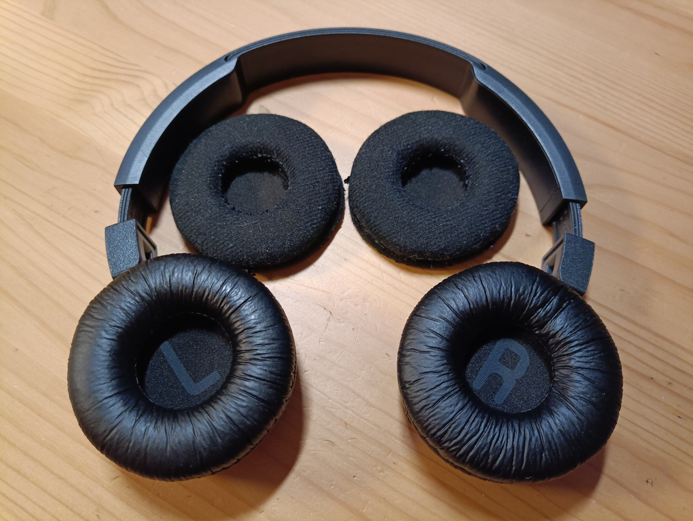
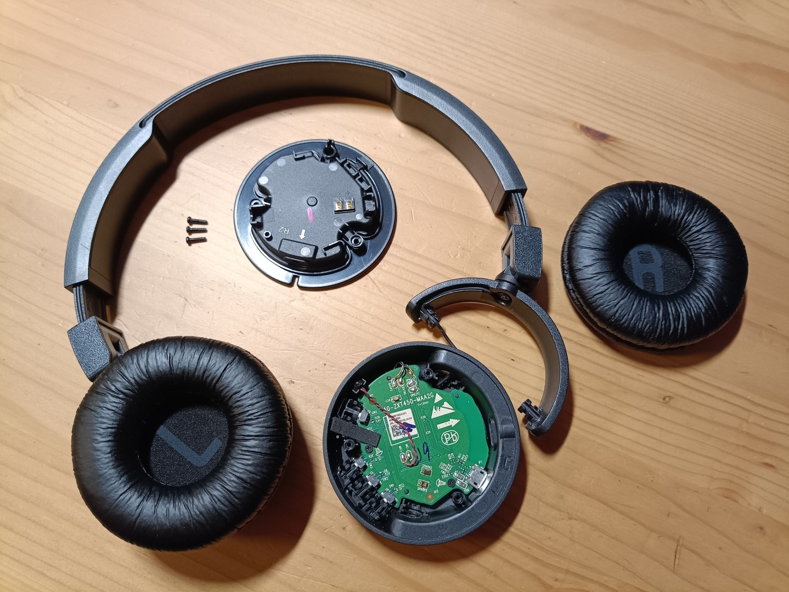

Амбушюры для JBL T450BT

Продолжая тематику bluetooth аудио, я заказывал на мои старые JBL T450BT новые амбушюры. Цена вопроса всего 150 рублей, а мои старые амбушюры сносились так, что осталась только ткань. Качество звука немного ухудшилось. Это всё-таки, не открытые или полуоткрытые наушники. Это закрытая классика.

В процессе смены амбушюров обнаружил, что можно легко снять динамик, он крепится к чашке всего 3-я обычными винтиками. Динамик просто сидит на двух контактах, поэтому снять и поставить его – несложная задача.
Правая чашка у меня давно начала люфтить. Это не доставляет неудобств, но прижим наушников был чуть слабее, чем я ожидал бы. Поглядел. И чашку можно снять, нужно растянуть удерживающую её пластиковую лапу, на которой сама чашка вращается.
Главное не дёргать резко чашку, чтобы не оборвать провод!
А у самой лапы, точнее, у шарнира, на котором она вращается, есть винт, подкрутив который я и нивелировал тот самый люфт правого наушника.
Порядок сборки наушников обратный. Вставляем чашку в лапу (следя за укладкой провода), ставим динамик, закручиваем 3 винтика и надеваем амбушюр.
После замены амбушюров качество звука чуть повысилось. Это не фантастические наушники, но они прослужили мне уже достаточно долго (6 лет). Приятно было увидеть, что ремонтопригодность у них достаточно высокая.
Кстати, у новых амбушюров даже есть LR маркировки, чтобы проще отличать стороны.